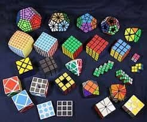
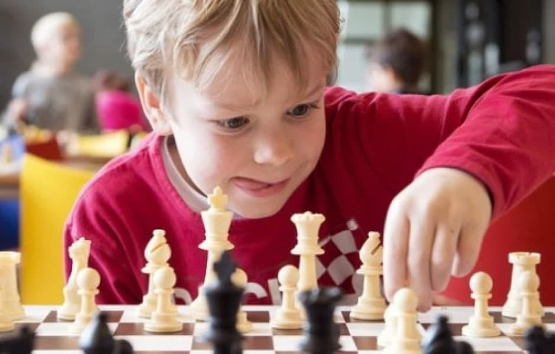

Спідкубінг
У 1970-х роках угорський скульптор і архітектор Ерно Рубік викладав в одному з будапештських інститутів. Студенти погано засвоювали математичну теорію груп, і професор вирішив пояснити її наочно. Змайстрував 26 дерев'яних кубиків і розфарбував кожен шістьма кольорами. Завдання з'єднати їх в один куб була ой який непростий, але через місяць наполегливої роботи Ерно Рубік зібрав свою головоломку.
Малювання

Олійний розпис – різновид живопису, який активно спирається на принцип «багатошаровості», що дає змогу створити фактурність зображення. Він набув значного поширення на межі XIV–XV ст. у країнах Західної Європи. Фарби, основу яких складають рослинні олії, під час висихання іноді темніють, що пов'язано з кольоровими особливостями ґрунту. Здебільшого це трапляється з темно ґрунтовими полотнами, тоді як білий ґрунт дає можливість зберегти кольорове багатство.
Шахи
Ша́хи — абстрактна стратегічна гра на спеціальній дошці, що має назву шахівниця й поділена на 64 світлі та темні клітини (поля), між 16 світлими (білими) і 16 темними (чорними) фігурами за встановленими для них правилами пересування[1]. У цю гру грають мільйони людей по всьому світі. Походить від стародавньої індійської гри чатуранґа, яка, крім того, є ймовірним предком східних стратегічних ігор сянці, чангі і сьоґі. Шахи потрапили до Європи в 9 столітті, внаслідок завоювань Омейядів в Іспанії. Фігури набули своєї нинішньої сили в Іспанії наприкінці 15 століття; правила стандартизовано в 19 столітті.